Lesson9 -Accessing the Canvas
Lesson9 -Accessing the Canvas
You should know JavaScript in order to manipulate canvas.So Let's learn Javascript for manipulating canvas.
Javascript Concepts for canvas
It was created to allow you directly access various parts of HTML DOM. Let look at the example::
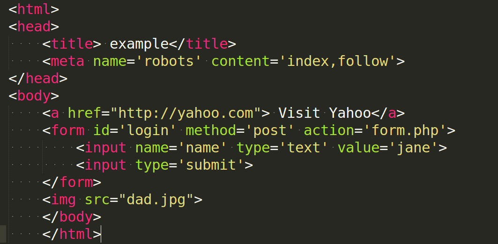
So, We have following 5 tags in HTML. With this 5 tags we will access the elements from Javascript.
- Title Tag - "example"
- Meta Tag - having name='robots' and content='index,follow'
- Anchor Tag
- Form Tag - having ID, METHOD=POST AND ACTION= form.php
- Image Tag - "dad.jpg"
Accessing "Form" elements from Javascript
so if you want to change the title of URL from title tag, then you can change using javacsript:
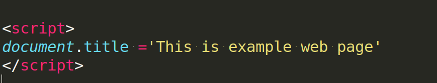
Your title is change now. see the magic of Javascript. Now Let's change the method attribute from "post method" to "get method" of form:
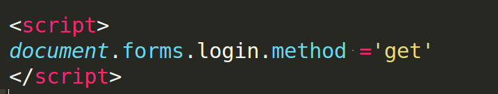
Javascript references first the document, then forms within the document, then the form with id login and its method, which is then modified.
Accessing the elements using getElementById() function
In previous examples, I showed you how to access parts of a document by their type, but there is far easier method to give every element in a document a unique id, and then to access them from Javascript using just those id's. So let's do it with id's.
if you want to change the image from dad.jpg to mom.jpg:
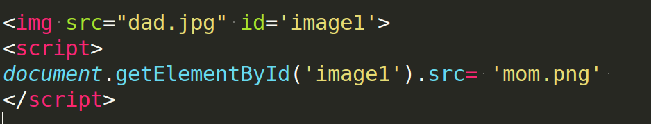
if you want to change the value of input tag from jane to mike:
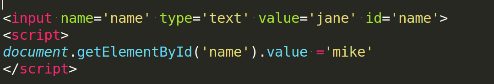
The Simpler O() function
I use getElementById() function so often that i always create a simple function called O() to make it easier ti type in. The function looks like below and simply place it anywhere in a section of Javascript. It saves 22 characters of tying each time the replacement of O() function is used instead of longer one.
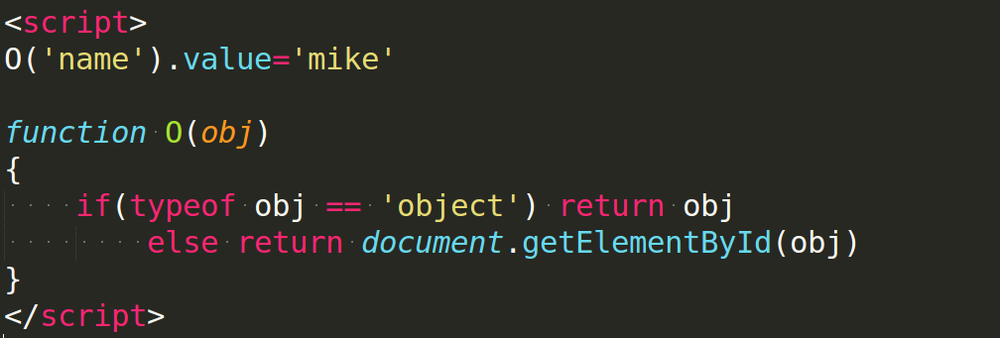
- Instead of directly manipulating the value of the form input with id of name directly, let first create what is called an object from element, like this:: newobject = O('name')
- Now , I have an object, I can access it several times without ever having to call the O() function again, like this:
newobject.value='mike'
newobject.value='fred'
- whwnever you wish to refer the element in question, I can simply use the object that I have created.
The Partner S() function
It is used to enable Javascript to easily access any style attribute of any element.
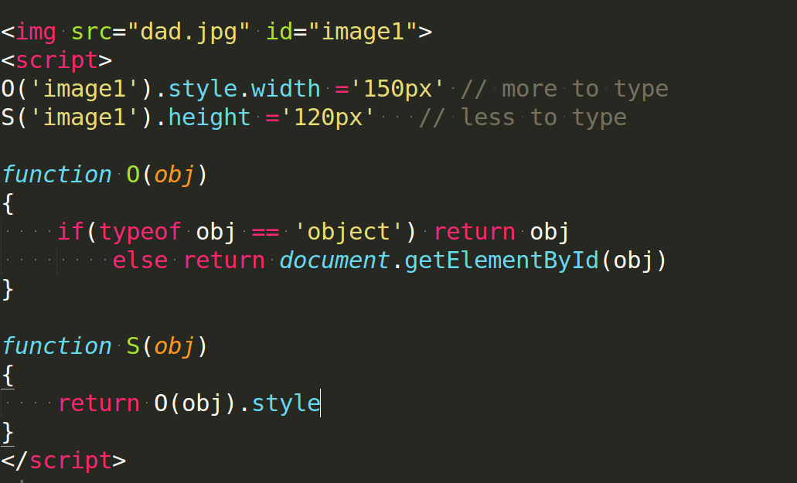
- what I have done id simply make the S() function place a call to the O() function but with an added .style suffix and now I can use O() function for accessing the elements by name and S() function for accessing style attributes of elements by name
- these 2 functions provide huge amount of scopt and power to modify any part of a document.
- Just add O() function and S() function anywhere in javascript any document that will refer to them.
- whenever you need to use these functions, open up a new script tag and access them like this:
script tag --open--
S('image1').width ='150px'
S('image1').height ='120px'
script tag --close--
- This works because you are allowed to enter script tags as many as you like in a document--there is no requirement to keep all your Javascript code within a single set of script tags although you may do so if you wish.
- If you would like to create an object on a first call to the O() function, then reference that instead, the preceding code might look like this
script tag -----open------
myimage = O('image1')
S('image1').width= '150px'
S('image1').height= '120px'
script tag -----close-----
Canvas Tag
Creating a canvas:
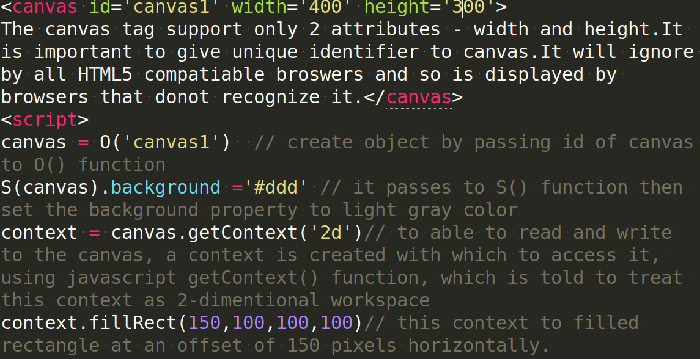
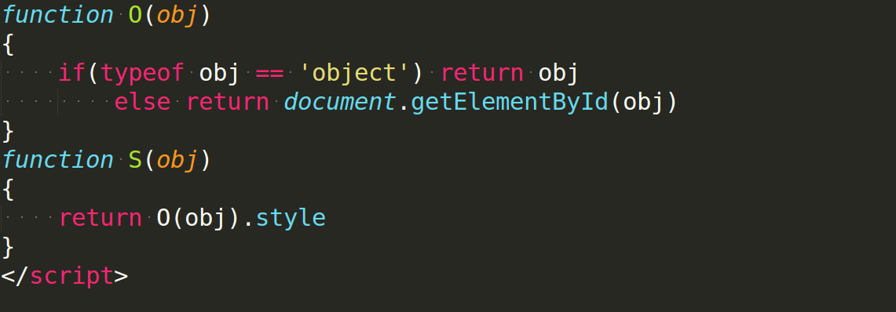
Converting Canvas to an Image
 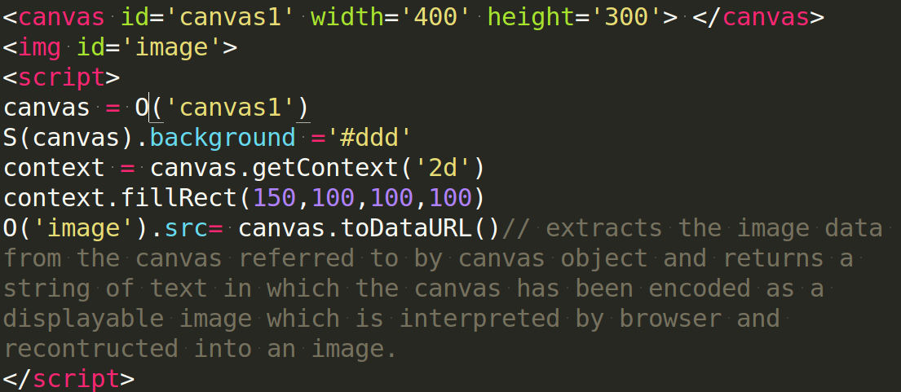
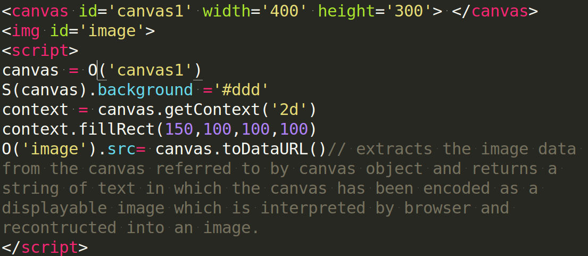
The imagetype Argument
when an image is created from a canvas, you can choose the type of the image to use between a jpeg and png image using imagetype argument.
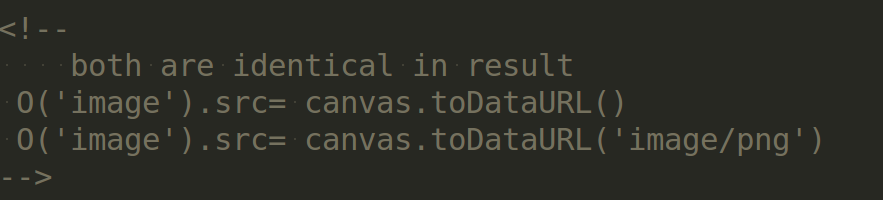
You can also use code such as following three examples which create a very low-quality, medium quality and very high quality image by passing an additional argument containing a value between 0(low quality) and 1(high quality)
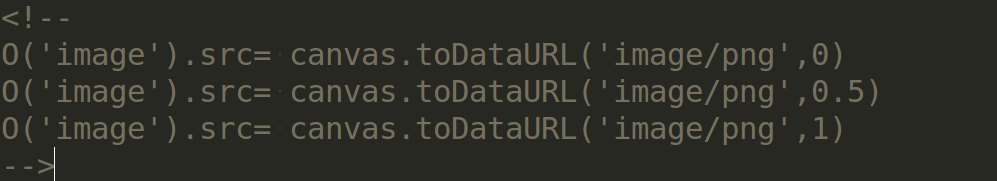